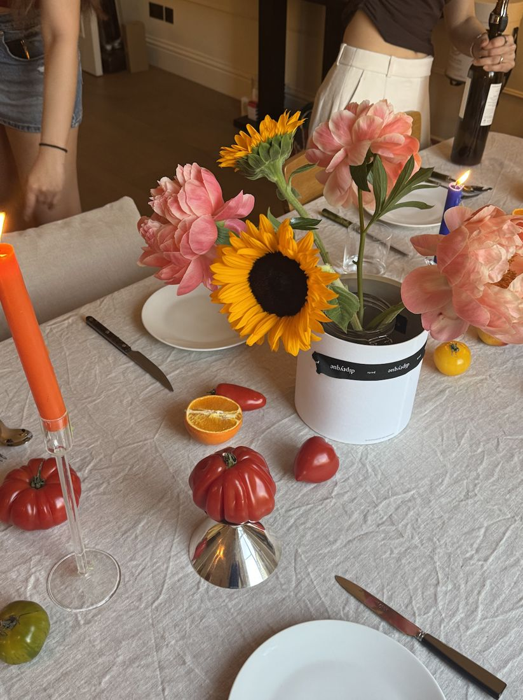
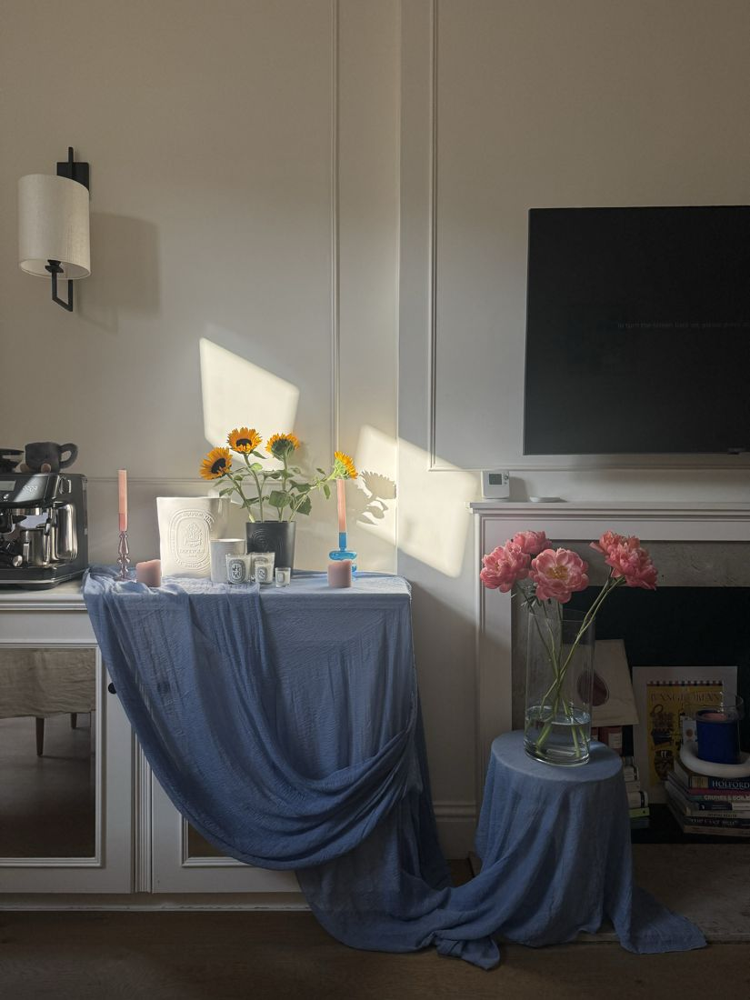
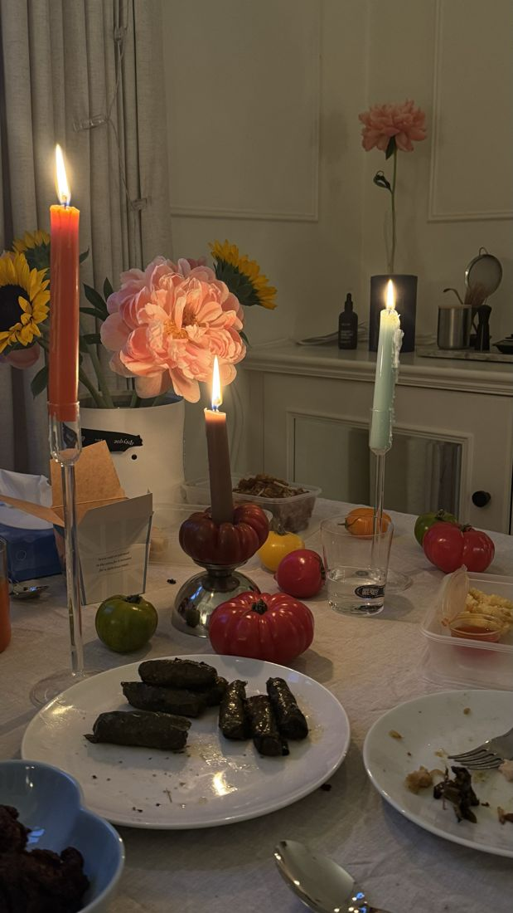
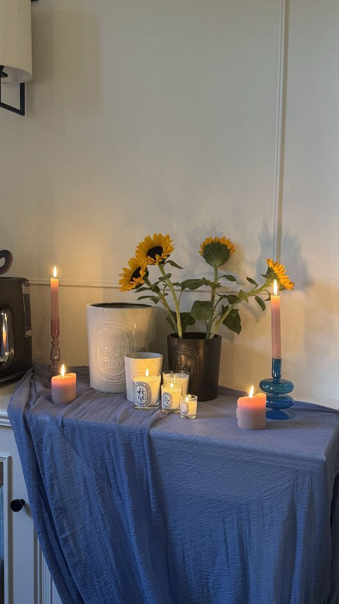
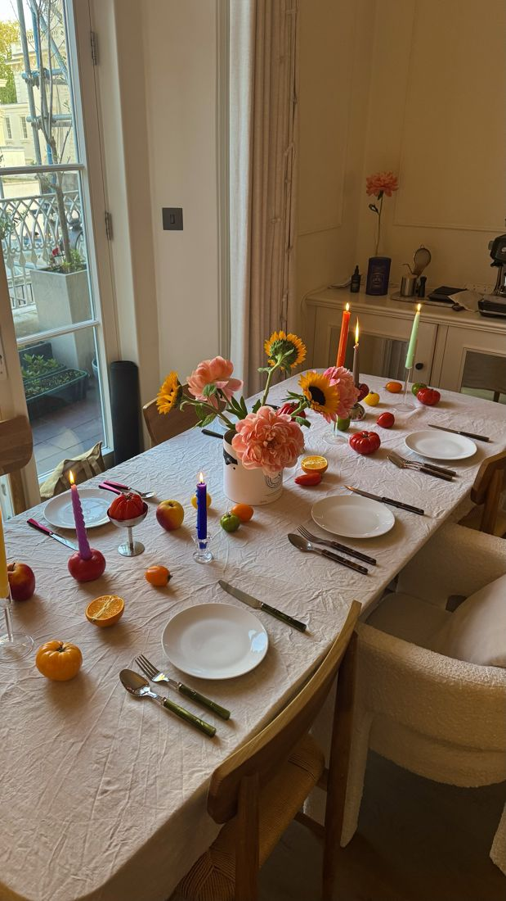

Dee Dee’s 25th Birthday
This dinner holds a special place in my heart as I turned 25. This marks a new chapter in my life in many ways: graduation, career, and self-discovery. My inspiration for this table was the slow transition from Spring into Summer - fresh, colourful produce, along with sunflowers and peonies to serve as a reminder to always look on the bright side of life.




